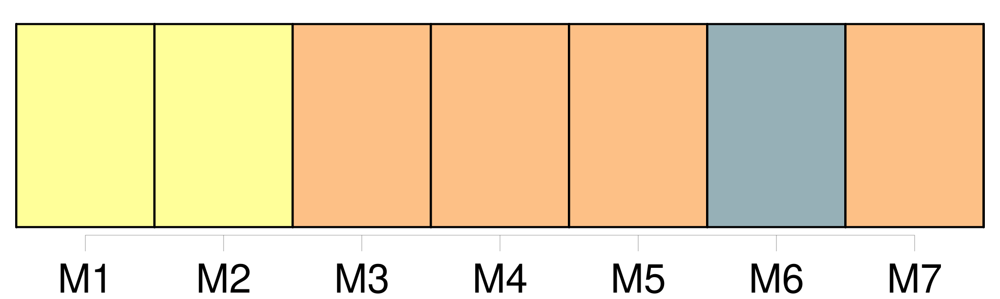
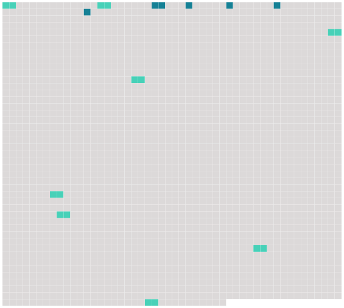

Longueur nb maillons : 14 mentions |
 |
[Le Dauphin] et la Dauphine sont à côté l'un de l'autre. [Le Dauphin] est d'une taille médiocre, [il] [se] tient mal, [il] est brun et pâle et [a] d'assez beaux yeux noirs. [Il] avait un habit de velours cramoisi, paremens et veste d'or, et une belle agrafe de diamans qui tenait [son] cordon bleu. [12 phrases] Le Roi était en haut, [le Dauphin] à sa droite, la Dauphine à sa gauche. [18 phrases] « Quand ils eurent fini, [le Dauphin] donna à laver au Roi et ils sortirent. [45 phrases] « À la queue de la procession, viennent le comte d'Artois, petit-fils cadet du Roi, le comte de Provence et [le Dauphin] [8 phrases] L'appartement [du Dauphin] est le moins beau du château, celui de la comtesse de Provence le plus élégant, il est meublé de satin blanc sur lequel sont brodés des bouquets en chenilles, très naturels. [10 phrases] « Nous passâmes ensuite chez Mesdames sœurs [du Dauphin] [20 phrases]
Le Roi est aussi fort haï de ses sujets, soit à cause de sa faiblesse, soit à cause des mauvais ministres qu'il a choisis ou des grandes dépenses qu'il fait pour Mme du Baril, mais par contre [le Dauphin] et la Dauphine sont chéris de tout le monde. |
 |
Il est possible de télécharger la ressource sur la page Ortolang |
Si vous avez des questions ou vous voyez des erreurs, merci d'envoyer un mail à silvia.federzoni89@gmail.com |